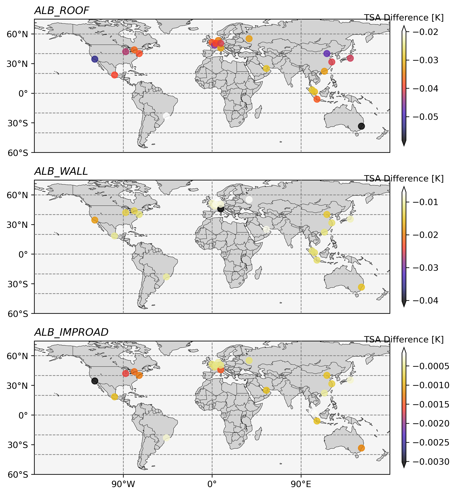
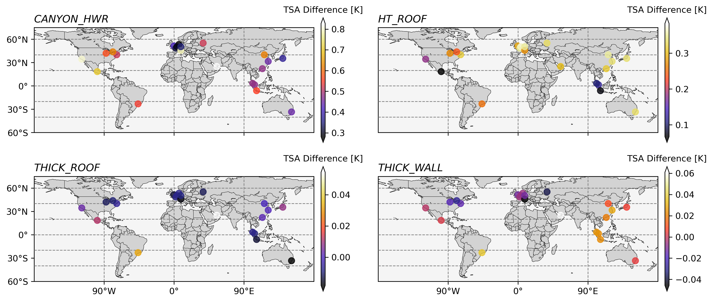
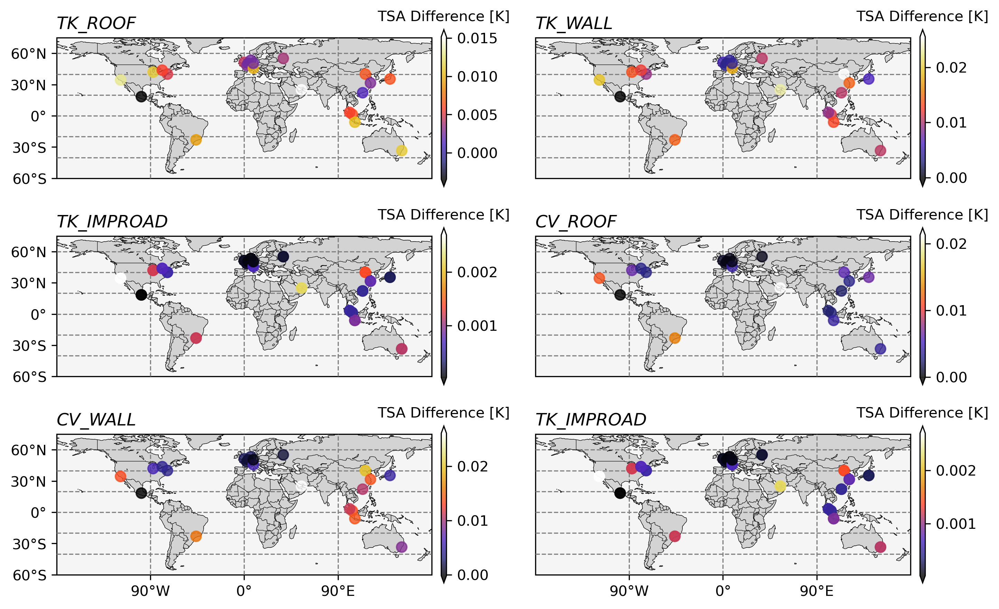

Exploration of climate sensitive of different urban parameters using clmu-app
Junjie Yu 2024-02-15, Manchester
As the examples describe, one of the useful function of clmu-app is to explore the change climate with a changing urban surface parameters. Investigating this, we can gain information on urban planning/design or offer opportunities for other urban related subjects.
Here we explored the 24 gird that contains most developed cities in the world (ref: https://en.wikipedia.org/wiki/Globalization_and_World_Cities_Research_Network ).
We selected three categories of urban parameters, including morphological, radiative and thermal index.
Results preview
Env: clmu-app Forcing: DATM SSP370 - Simulation year 2055 - New York Grid - Compset: SSP370_DATM%CPLHIST_CLM50%SP_SICE_SOCN_SROF_SGLC_SWAV - Resolution: f09_g17
Primary results: Each urban surface parameters increased by 1.2 times respectively.
TSA: Surface 2m temperature (yearly average), K
TSA difference: difference in result of changed urban surface and no change.



ref code
import os
os.chdir('/home/zhonghua/docker/DRL_urban_climate_adaptation/RLctsm/')
import sys
sys.path.append('/home/zhonghua/docker/DRL_urban_climate_adaptation/RLctsm/')
from utils.cesm import *
from utils.ini_env import *
def run_case(i, sur_var, case_year="2055", script_name = "PTS_SSP370_up.sh"):
print(now_time())
CASESCRIPT = "/p/project/clm5.0/cime/scripts"
CASESCRIPT_local = "/home/zhonghua/p/project/clm5.0/cime/scripts"
CASEROOT_local = "/home/zhonghua/p/scratch/CESMDATAROOT/CaseOutputs"
DOUT_S_ROOT = "/home/zhonghua/p/scratch/CESMDATAROOT/Archive"
scriptpath = f"./scr/{script_name}"
configpath = "./notebook/config_SSP370_up.json"
cesm = cesm_run(CASESCRIPT, CASESCRIPT_local, CASEROOT_local, DOUT_S_ROOT, configpath)
cesm.config['case_lat'] = case_loc[i]['case_lat']
cesm.config['case_lon'] = case_loc[i]['case_lon']
cesm.config['case_start_year'] = case_year
cesm.config['case_end_year'] = case_year
cesm.config['fsurdat'] = cesm.config['fsurdat'].replace('env_id',str(i)+"_"+cesm.config['case_name'])
local_fsurdat_temp = copy.deepcopy(cesm.config['local_fsurdat']).replace('env_id','')
cesm.config['local_fsurdat'] = cesm.config['local_fsurdat'].replace('env_id',str(i)+"_"+cesm.config['case_name'])
# copy the surface data
copy_file_if_not_exists2(local_fsurdat_temp,
cesm.config['local_fsurdat'],
cesm.config['case_lon'],
cesm.config['case_lat'],
)
with open(f"/home/zhonghua/p/pyscripts/{script_name}", "w") as f:
f.write(cesm.create_case(scriptpath))
alb_paramdict = dict(lsmlat=0, lsmlon=0, numurbl=1)
if sur_var == "None":
pass
else:
ds = xr.open_dataset(cesm.config['local_fsurdat'])
if sur_var in ['ALB_IMPROAD','ALB_ROOF','ALB_WALL'] :
actions = {
sur_var+"_DIR": ds[sur_var+"_DIR"].loc[alb_paramdict].values * 1.2,
sur_var+"_DIF": ds[sur_var+"_DIF"].loc[alb_paramdict].values * 1.2,}
else:
actions = {sur_var: ds[sur_var].loc[alb_paramdict].values * 1.2}
# * Modify the surf file
cesm.modify_surf(var=None, action=actions, param_location=alb_paramdict)
# password = "***"
password = "Manchestermedal"
# change the permission of the script
command_0 = f"sudo -S docker exec myclmu chmod +x /p/pyscripts/{script_name}"
run_command(command=command_0, password=password)
# run the script
command = f"sudo -S docker exec myclmu sh -c '/p/pyscripts/{script_name}' "
run_command(command=command, password=password)
l = ['TREFMNAV','TREFMXAV','TSA','RH2M']
ds = cesm.nc_view()
result = {}
for var in l:
ds1 = ds[var].assign_coords({'landunit': ds['land1d_ityplunit'].values})
result[var+"_u"] = ds1.sel(landunit=8).values.flatten().tolist()
result[var+"_r"] = ds1.sel(landunit=1).values.flatten().tolist()
script = "sudo -S rm -rf " + cesm.config['local_fsurdat']
subprocess.run(script, input=password, text=True, check=True, shell=True)
return result
Temperature = {}
var_ls ={"morphological":['CANYON_HWR','HT_ROOF','THICK_ROOF','THICK_WALL'],
"radiative": ['ALB_IMPROAD','ALB_ROOF','ALB_WALL'],
"thermal":[
'TK_ROOF','TK_WALL','TK_IMPROAD','CV_ROOF','CV_WALL','TK_IMPROAD']
}
var_ls_ls = ['None']
for i in range(1, 25):
for sur_var in var_ls_ls:
result = run_case(i=i, sur_var=sur_var)
Temperature[str(i)+sur_var] = {
"data": result,
"loc": case_loc[i],
"action": sur_var
}
with open("SSP370_urban_properties_none.json", "w") as f:
json.dump(Temperature, f)
# reset the cases
command_0 = f"sudo -S docker exec myclm rm -rf /p/scratch/CESMDATAROOT/CaseOutputs/ssp370up"
run_command(command=command_0, password="Manchestermedal")
command_1 = f"sudo -S docker exec myclm rm -rf /p/project/clm5.0/cime/scripts/ssp370up"
run_command(command=command_1, password="Manchestermedal")